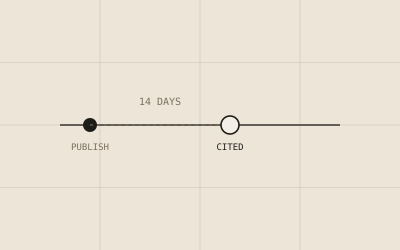
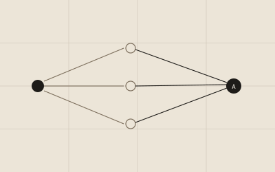
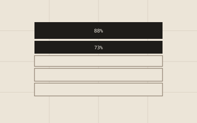
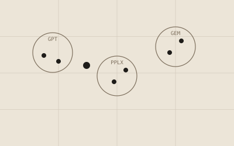

Crawl freshness vs AI visibility
A six-month benchmark across seven AI platforms and 14,000 prompts. Median first-citation latency was 14 days, and authority beat freshness as a retrieval signal.
Original research on how AI systems crawl, parse and cite the web, written alongside the audit tools that test it.

A six-month benchmark across seven AI platforms and 14,000 prompts. Median first-citation latency was 14 days, and authority beat freshness as a retrieval signal.

45.2% of AI responses require multi-page synthesis. Perplexity and Copilot lead every platform tested, and B2B SaaS queries synthesize far more broadly than e-commerce.

LLMs retrieve only 12 to 45% of the average webpage. Introductions get retrieved in 88% of cases, conclusions in just 26%.

60,000 prompt executions across six platforms found no single AI ranking system: 58% of recommended businesses appear on only one platform.